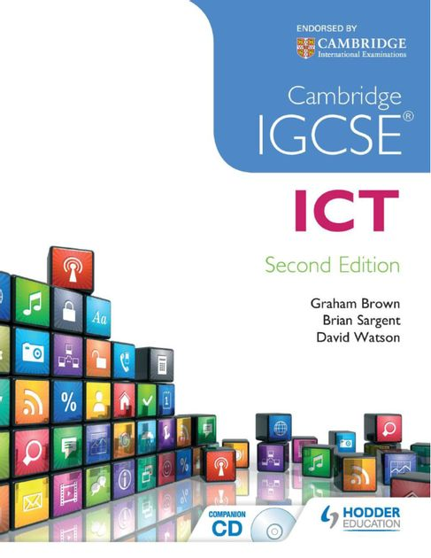

This website is used to help those who struggle with ICT and needs help for their IGCSE course.
In this website it will cover chapters in the IGCSE ICT textbook for Cambridge; Chapter 3 (Storage Devices & Media) and Chapter 4 (The Networks and the Effects on using them)
